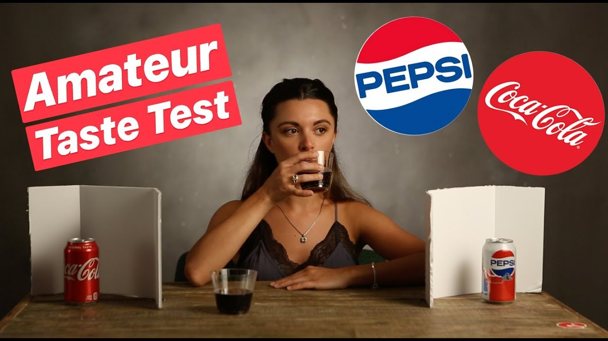
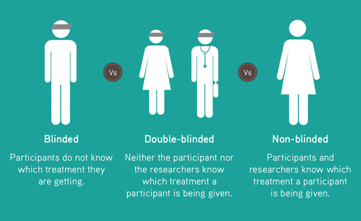

Blinded Research
Don't get caught up in this!!
Blinding is a technique used to prevent conscious and unconscious bias in research.
Blinded research also helps scientists reduce the effect of confounding factors, including the Hawthorne effect (to be discussed later). To illustrate, if a researcher designed a taste test to compare different product brands, consumers who might usually choose their regular brand, may favour a different brand when the brand identities are concealed. In this example, participants are blind to the brand name of the product they are consuming.

Experiments can be single-blind or double-blind. In a single-blind experiment, participants do not know if they are in the experimental group or in the control group, but the researcher knows. The single-blind experimental design is used when the researchers must know all details or when they are confident they will not introduce further bias into the experiment.
With single-blind experiments, there is a risk that participants will be influenced by the interaction with researchers, not just with the manipulated variable. This phenomenon is known as experimenter's bias. In these instances, the outcome of an experiment tends to be biased towards the result expected or desired by the researchers. The inability of individuals to be completely objective is the main source of experimenter's bias.
